Priority Areas for Applied Cancer Screening Research: Strategic Planning Process
Figure 1. Numbered Point-Map Showing the 80 Statements
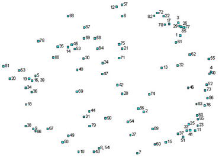
Figure 2. Cluster-Point Map Showing 80 Statements and 10 Priority Areas
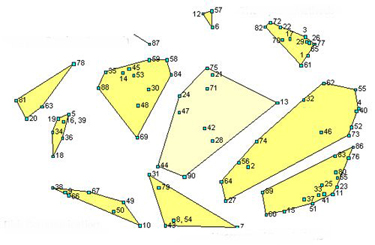
Figure 3. Cluster-Point Map Showing 80 Statements as Points within 10 Priority Areas and 4 Thematic Areas
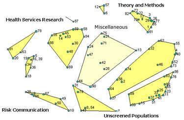
Figure 4. Importance Ratings of the 10 Priority Areas
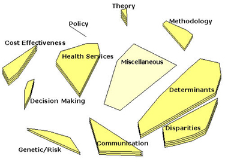
Figure 5. Feasibility Ratings of the 10 Priority Areas
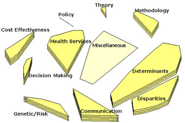
Figure 6. Overall Pattern Match of the Correlation Between Importance and Feasibility by 10 Priority Areas
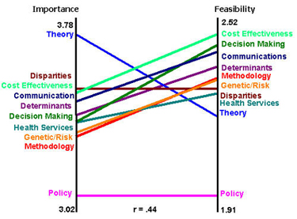
Figure 7. Statements Rated for Importance and Feasibility Shown by the Methodology Priority Area
| Methodology 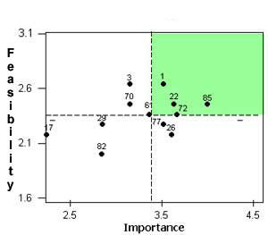 |
Encourage innovative qualitative approaches to understanding barriers to screening. (1) Encourage more small-scale preliminary research projects. (3) Consider the difference between screening in the classic sense and case finding. (17) Encourage replication studies with different populations so that they can be evaluated for best practices model. (22) Evaluate how to link national and state data on screening of cancer incidence and outcomes for those areas. (26) Consider quantifying the potential impact of directing efforts at particular populations via simulation modeling. (29) Support designs to test the aggregate, as well as the independent effects of multi-strategy interventions. (61) Model screening prevalence needed to reduce breast, cervix and colorectal cancer mortality by 2005 and 2010. (70) |
| Encourage high quality reporting of published results, methods and outcomes, to create a coherent body of knowledge. (72) Develop and test alternatives to the traditional experimental-control approach for evaluation of community-based studies. (77) Support application of current successful models of intention to treat designs for cancer screening. (82) Establish consensus on appropriate outcome measures for behavioral interventions. (85) |
|
| Back | |
| Figure 8. Statements Rated for Importance and Feasibility Shown by the Determinant Priority Area | |
| Determinants 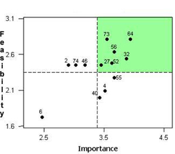 |
Examine effects of screening with and without false positive results on worry/anxiety about cancer. (2) Understand ecological influences on cancer screening behavior. (4) Identify impact of false positive cancer screening tests on future screening behavior. (27) Examine predictors of multiple screening behaviors simultaneously to determine how behaviors cluster. (32) Study community level predictors of cancer screening. (40) Explore the impact of social support on screening behaviors. (46) Support basic behavioral (pre-intervention, "fundamental") research on the role of culture and screening behavior. (52) |
| Support adoption of successful cancer screening intervention strategies for community based populations. (55) Test the specific impact of tailored interventions in increasing cancer screening behavior. (56) Identify "pathways" to early detection. (62) Test strategies to improve follow-up of abnormal screening test results. (64) Study influences on the receipt of repeat cancer screening. (73) Understand the role of fear as a barrier to screening, and develop strategies to help people overcome it. (74) |
|
| Back | |
| Figure 9. Statements Rated for Importance and Feasibility Shown by the Theory Priority Area | |
| Theory 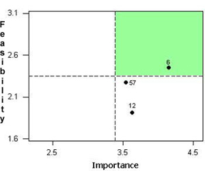 |
Encourage integration of different theoretical perspectives into intervention development. (6) Research the relative effectiveness of different theories in increasing prevention/screening activities. (12) Encourage development of theory relating macro levels of influence to individual screening behavior. (57) |
| Back | |
| Figure 10. Statements Rated for Importance and Feasibility Shown by the Health Services Research Priority Area | |
| Health Services 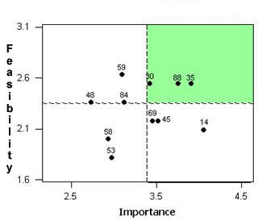 |
Consider interventions addressing multiple behavioral concerns, not just screening. (14) Assess the relative value of factors that enable provider and patient screening behaviors in practice settings (particularly multiple screens). (30) Focus research on the translation of proven screening programs into actual clinical practice. (35) Determine how to integrate cancer preventive service delivery in the midst of the competing opportunities of the primary care setting. (45) Describe PSA screening practices among physicians. (48) Develop capacity building strategies for endoscopic colorectal cancer screening. (53) Identify practices most able to adopt innovations in cancer prevention. (58) Describe the actual practices in HMOs to promote screening. (59) Examine information systems that facilitate transfer of screening guidelines to clinicians. (69) Assess the impact of different managed care settings on screening practices. (84) Identify ways to package cancer screening with other preventive services. (88) |
| Back | |
| Figure 11. Statements Rated for Importance and Feasibility Shown by the Policy Priority Area | |
| Policy 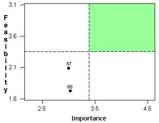 |
Assess the impact of the Breast and Cervical Cancer Prevention and Treatment Act of 2000. (68) Assess policy relevant to diagnostic and treatment service provisions in population screening programs. (87) |
| Back | |
| Figure 12. Statements Rated for Importance and Feasibility Shown by the Disparities Priority Area | |
| Disparities 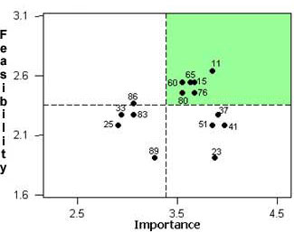 |
Develop outreach strategies that respond to underserved populations in rural areas. (11) Increase research on the most effective educational approaches for low-literacy individuals. (15) Explore beyond race/ethnicity on the major cultural constructs that may be associated with screening. (23) Explore the extent to which "trust" is an issue with various ethnic populations. (25) Support interventions for minority groups that focus on the relation of HPV and cervical cancer. (33) Develop and test strategies for reaching the hard core screening non-participant. (37) Test interventions to eliminate socioeconomic disparities in cancer screening. (41) Reduce disparities with respect to initial access to screening and abnormal follow-up in key cancer areas. (51) Test the feasibility of using new media technologies to educate underserved/poor regarding cancer screening. (60) Investigate similarities/differences in barriers to obtaining various cancer screening tests in different populations. (65) Encourage research on the cultural appropriateness of behavioral theories used to explain screening and inform interventions. (76) Study the importance of context especially among the hard to reach subpopulations and those who never screen. (80) Collect up to date data on cancer screening access among rural residents. (83) Diversify intervention research geographically. (86) Examine the feasibility of "low tech" screening for developing countries and underserved areas of the US. (89) |
| Back | |
| Figure 13. Statements Rated for Importance and Feasibility Shown by the Decision Making Priority Area | |
| Decision Making 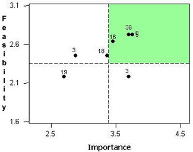 |
Support provider studies of decision making about colorectal cancer screening options. (5) Develop and test strategies to promote shared decision making to increase cancer screening. (16) Encourage research on decision making strategies in high risk families. (18) Develop a team model approach for prostate cancer patients to facilitate treatment decisions over short and long run. (19) Examine the issue of informed consent for screening. (34) Examine patient decision making and preferences for different colorectal cancer screening tests. (36) Assess patient and provider decision making when screening recommendations are uncertain (e.g., PSA testing). (39) |
| Back | |
| Figure 14. Statements Rated for Importance and Feasibility Shown by the Communication Priority Area | |
| Communication 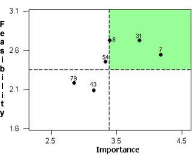 |
Develop and test cancer risk communication messages across different ethnic/minority and cultural groups. (7) Develop and test gender specific messages for colorectal cancer screening. (8) Test strategies for increasing patient-provider communication regarding screening. (31) Develop a balanced prostate cancer screening message and determine effective ways to disseminate it. (43) Evaluate and test colorectal risk communications via multi-media methods. (54) Support educational interventions regarding the role of HPV in cervical cancer. (79) |
| Back | |
| Figure 15. Statements Rated for Importance and Feasibility Shown by the Risk/Genetic Assessment Priority Area | |
| Risk/Genetic Assessment 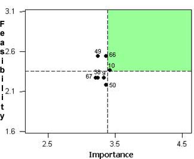 |
Anticipate the behavioral research issues likely to develop with the introduction of biomarker screening. (9) Study how people interpret genetic risk information, especially absolute versus relative risk. (10) Examine the policy issues related to genetic screening for cancer. (38) Examine psychosocial and other screening issues in first-degree relatives of cancer survivors. (49) Evaluate and assess the psychosocial and system effects of genetic testing for cancers among high and average risk people. (50) Expand behavioral research in the area of screening for genetic risk for cancer. (66) Determine how risk assessment should be incorporated into screening programs. (67) |
| Back | |
| Figure 16. Statements Rated for Importance and Feasibility Shown by the Cost Effectiveness Priority Area | |
| Cost Effectiveness 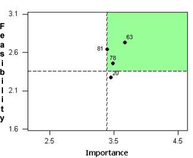 |
Conduct cost-utility studies for new colorectal cancer screening tests on the horizon (e.g. virtual colonoscopy). (20) Study cost effectiveness of screening interventions. (63) Evaluate the effectiveness and costs of packaging (all) screening in the primary care setting. (78) Examine cost effectiveness of various early detection formats. (81) |
| Back | |
| Figure 17. Concept Map Showing Priority and Thematic Areas of Research for the Applied Cancer Screening Research Branch | |
| 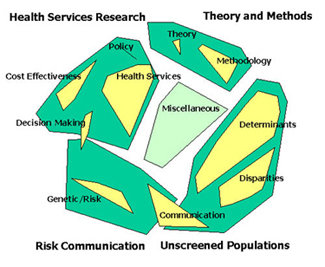 Back |
|